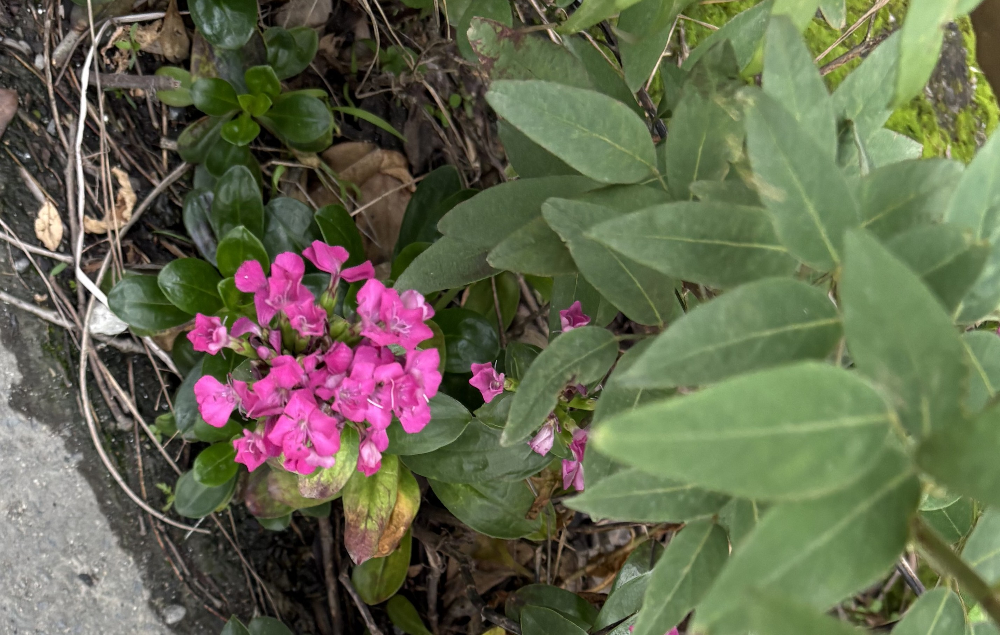
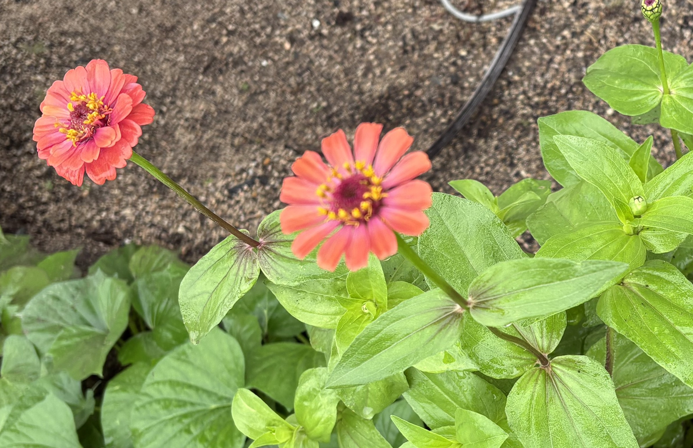
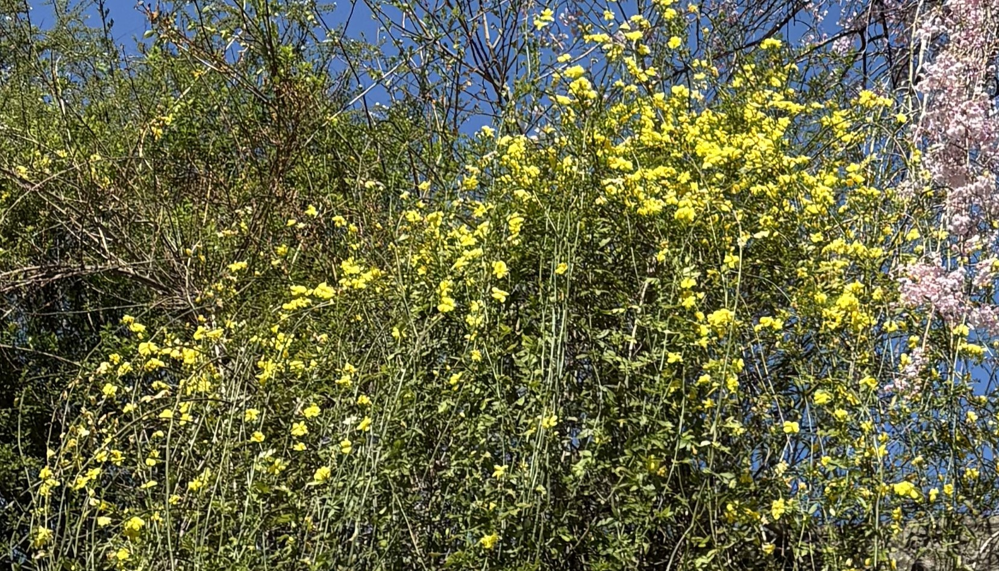

- トップ >
- 散歩草花
散歩草花
道端などで見つけた草花などの名前を調べ皆様にご紹介
- いろんな花
いろんな花
| マリーゴールド | 花言葉：勇者、健康、変わらぬ愛 |  |
|
|---|---|---|---|
| カランコエ | 花言葉：幸福を告げる、たくさんの小さな思い出 |  |
カランコエ |
| ヒャクニチソウ | 花言葉：いつまでも変わらぬ心、絆、幸福 |  |
ヒャクニチソウ |
| 雲南黄梅 | 花言葉：控えめな美、恩恵、気高い美しさ |  |
雲南黄梅 |